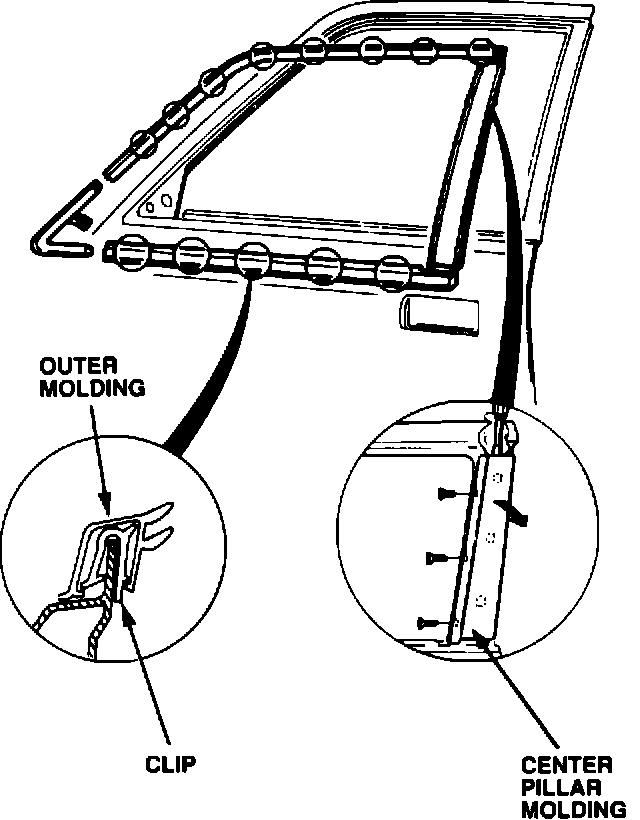
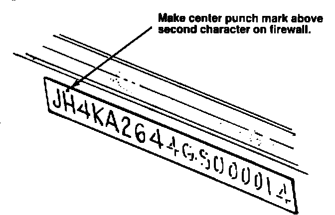

Body - Front Door's Center Pillar Molding Rubber Split
89acura07YEAR MODEL VIN APPLICATION
1986 LEGEND ALL
SEDAN
November 13, 1989
BULLETIN NO.
88-006
Split Center Pillar Molding (Supersedes 88-006, dated February 29, 1988)
PROBLEM
The rubber on the trailing edge of the front door's center pillar molding may split.
CORRECTIVE ACTION
Replace both the left and right center pillar moldings on all 1986 models, whether the rubber is split or not, with the improved moldings listed under PARTS INFORMATION.
NOTE: Replace the moldings at the next regular service or other dealer visit.

PROCEDURE
1. Starting at the rear, remove the outer molding by prying it up with a flat tip screwdriver.
2. Remove the center pillar molding by first removing the three screws, then carefully prying with a long flat tip screwdriver, as shown.
3. Install the new center pillar molding, then reinstall the outer molding.

4. Center punch a completion mark on the firewall above the second digit of the VIN, then apply a protective coating of grease to the VIN.
PARTS INFORMATION
Center pillar molding
Left: P/N 72470-SD4-023
Right: P/N 72430-SD4-023
WARRANTY CLAIM INFORMATION
In warranty: The normal warranty applies.
Out-of-warranty: Any repair performed after warranty expiration may be eligible for goodwill consideration by the District Service Manager. You must request consideration, and get the DSM's decision, before starting work.
Operation number: 839135 NEW
Flat rate time: 1.0 hour
Failed P/N: 72470-SD4-023
Defect code: 021
Contention code: A99